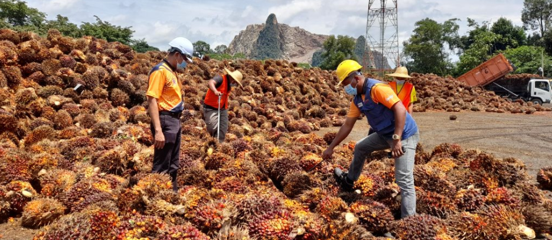
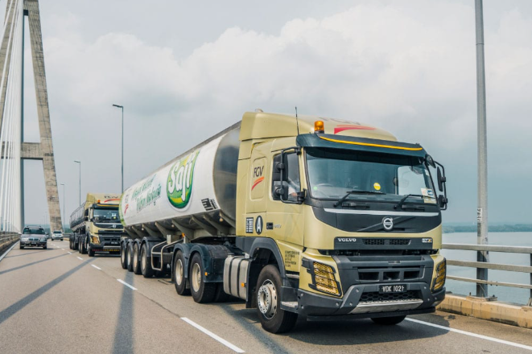
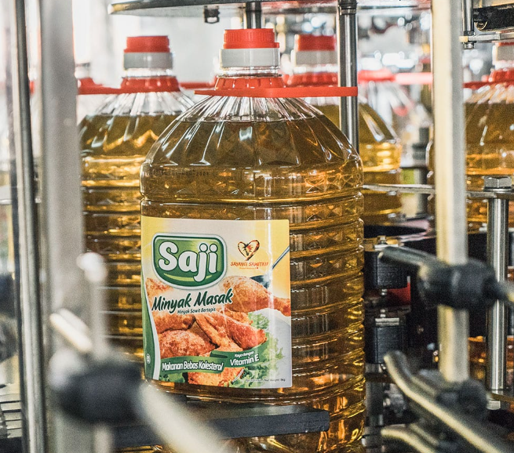

🌿
绿链认证
一瓶油的绿色旅程
🌍 原料产地
种植园位置
马来西亚彭亨州 FGV种植园
卫星验证结果
✅ Sentinel-2卫星验证
✅ 无非法毁林
✅ 符合欧盟EUDR法规
卫星影像对比 (2014 vs 2022)


基于Sentinel-2卫星验证，种植园边界稳定，无非法毁林。
🚚 一滴油的旅程
1. 果实采摘与收集
工人在 FGV 种植园手工采摘成熟的棕榈果串，并集中收集。
2. 快速运输
24小时内通过 FGV 专用卡车将果串送至压榨厂，保证新鲜度。
3. 压榨与精炼
在压榨厂进行物理压榨，并精炼成高品质食用油 (如Saji品牌)。
🏭 加工工厂 (中游)
精炼与分装
中粮集团 - 福临门品牌
质量认证
ISO 22000
HACCP
绿链认证
📋 可持续认证
✅ 绿链ESG风险评估：低环境风险
✅ 供应链透明度认证
✅ 零毁林承诺验证
✅ 供应链透明度认证
✅ 零毁林承诺验证
🌿 绿色里程碑
2014-2022年
Sentinel-2 卫星持续监测，无毁林证据。
2023年 第4季度
通过 ISO 22000 & HACCP 质量认证。
2024年 第2季度
通过“绿链”ESG风险评估，评级：低环境风险。
❤️ 感谢您的选择
每一次购买绿链认证产品，都是对可持续发展的支持！